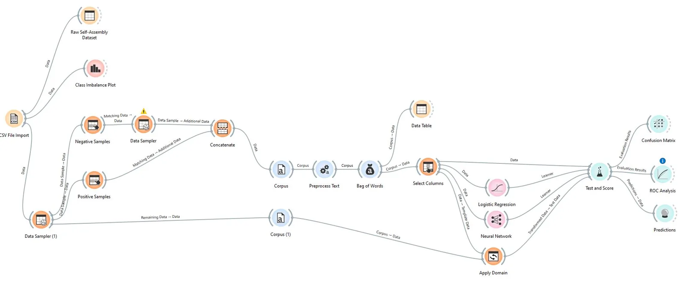

Daniel Tsen
Daniel TsenBio lab · GMU Young Scholars
Peptide self-assembly from sequence
Some short peptides assemble into ordered nanostructures on their own. Most don’t. I built three pipelines that predict which, from the amino-acid sequence alone.
All three above AUC 0.99
| Pipeline | Best model | CV AUC | Other metrics |
|---|---|---|---|
| Physicochemical descriptors | AdaBoost | 0.996 | CA 0.979 · F1 0.979 · MCC 0.958 |
| k-mer bag of words | Neural net | 0.993 | not in table |
| Engineered descriptors | not in table | > 0.99 | not in table |
Every pipeline reached a cross-validated AUC above 0.99 with at least one model. Oversampling ran before the split, so treat these as upper bounds. “Not in table” marks numbers the results table doesn’t give.
Why 0.996 is an upper bound
Oversampling ran before the split. That can leak duplicates across folds and inflate the scores, so I read them as an upper bound, not a clean estimate of how the models generalize.
The paper’s abstract gives a higher figure for the k-mer pipeline than its results table supports. I use the table. Its best is 0.996.
Three ways to turn a sequence into numbers
PIPELINE 1
Physicochemical descriptors
Amino-acid physicochemical properties as features.
PIPELINE 2
k-mer bag of words
The NLP-inspired one, above. Counts of every length-k window.
PIPELINE 3
Engineered descriptors
Derived sequence descriptors built by hand.
The classes were moderately imbalanced, so I used stratified oversampling. Every pipeline was scored with stratified 5-fold cross-validation across logistic regression, an RBF-kernel SVM, gradient boosting, AdaBoost and a neural net.

k-mer counting
Paper
Predicting Peptide Self-Assembly Using Machine Learning: A Comparative Study of Sequence-Based Feature Representations
Daniel Tsen and Christopher Lockhart (George Mason University). GMU Young Scholars Research Program, Jan 1, 2026.